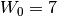
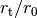
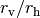
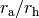
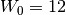
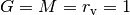
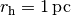
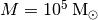

Examples¶
Construct a Woolley model with  and print  and 
>>> from dflab import limepy
>>> k = limepy(7, 0)
>>> print k.rt/k.r0, k.rv/k.rh
Construct a Michie-King model and print 
>>> a = limepy(7, 1, ra=2)
>>> print a.ra/a.rh
Create a Wilson model with  in Henon/N-body
units:  and print the normalisation
constant  of the DF and the DF in the centre:
of the DF and the DF in the centre:
>>> w = limepy(12, 2, scale=True, GS=1, MS=1, RS=1, scale_radius='rv')
>>> print w.A, w.df(0,0,0)
Multi-mass King model in physical units with  and 
>>> m = limepy(7, 1, mj=[0.3,1,5], Mj=[9,3,1], scale=True, MS=1e5, RS=1)